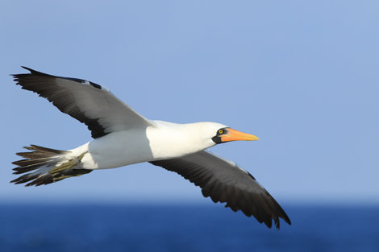

Elnino and Seabirds
A Rhythm of the seasons cannot always be relied upon. At times the tropical Pacific Ocean and large expanses of the global atmosphere seem to be marching to the beat of a different drummer, disrupting the normal patterns of countless species of plants and animals along with hundreds of millions of human beings. So they want anticipate these occasional lapses in the march of the seasons and help societies plan accordingly, scientists are seeking to understand these competing rhythms: the strongest of which is the alternation between the “normal climate” and a different but still recurrent set of climatic conditions in the Pacific region called El Nino.
B Seabirds are prominent and highly visible components of marine ecosystems that will be affected by global climate change. The Bering Sea region is particularly important to seabirds; populations there are larger and more diverse than in any similar region in North America—over 90% of seabirds breeding in the continental United States are found in this region. Seabirds, so named because they spend at least 80% of their lives at sea, are dependent upon marine resources for food. As prey availability changes in response to climatically driven factors such as surface sea temperature and extent of sea ice, so will populations of seabirds be affected.
C Seabirds are valued as indicators of healthy marine ecosystems and provide a “vicarious use value” or existence value—people appreciate and value seabirds simply because they are there and enjoy them through venues such as pictures, nature programs, and written accounts without ever directly observing seabirds in their native environment. A direct measure of this value is demonstrated by Federal legislation that established specific national wildlife refuges to protect seabirds and international treaty obligations that provide additional protection for seabirds. Seabirds are also an important subsistence resource for many who live within the Bering Sea Region. Furthermore, the rich knowledge base about seabirds makes them a valuable resource as indicator species for measurement of change in the marine environment.
D The most abundant breeding species in Alaska are northern fulmars, storm-petrels, kittiwakes, murres, auklets and puffins. These species also form the largest colonies. Fulmars, storm-petrels and kittiwakes are surface feeders, picking their prey from the surface or just below the surface; murres, auklets, and puffins dive for their food. Fulmars nest primarily on island groups in and around the Bering Sea. They take a wide variety of prey (e.g., fish, squid, zooplankton, jellyfish) from the surface or just below the surface. Storm-petrels are strictly nocturnal and nest below ground in either burrows or crevices between rocks. They forage on zooplankton and squid; in some areas they are dependent upon small fish such as capelin and sand lance caught at the surface. Black-legged kittiwakes are widespread throughout Alaska, Canada and Eurasia while red-legged kittiwakes are found only in the Bering Sea region. Both are surface feeders although black-legged kittiwakes feed primarily on small fish and forage over the continental shelf and shelf break; red-legged kittiwakes feed primarily on myctophids and will forage beyond the shelf break.
E Marine mammals have exhibited similar signs of food stress in recent years. Harbor seals at Tugidak Island in the Gulf of Alaska declined by about 85% between 1976 and 1988 . Steller sea lion populations declined by 36% in the Gulf of Alaska between 1977 and 1985 , and by another 59% between 1985 and . Northern fur seals declined about 35% by 1986 from their average numbers in the 1970s, although numbers had rebounded somewhat (20%) by 1990 . Associated with the declines in Steller sea lions are declines in birth rate, fewer breeding females, fewer pups, decreased adult body condition, decreased juvenile survival, and a change in population age structure.
F Walker noticed that monsoon seasons with low-index conditions are often marked by drought in Australia, Indonesia, India, and parts of Africa. He also claimed that low-index winters tend to be unusually mild in western Canada. One of his British colleagues chided him in print for suggesting that climatic conditions over such widely separated regions of the globe could be linked. In his reply Walker predicted, correctly, that an explanation would be forthcoming, but that it would require a knowledge of wind patterns above ground level, which were not routinely being observed at that time.
G The need for long-term time series It seems obvious that without good baseline data ornithologists are doomed to be surprised by the arrival of El Nino every few years. Even when ornithologists and ecologists are at hand to take advantage of an incoming El Nino, lack of preexisting data, and of monitoring afterwards, makes it difficult 134 F.M. Jaksic & J.M. Farina to understand responses of birds to the successive El Nino, La Nina, and “normal” years. Indeed, according to Jaksic, during the last century there were 12 El Nino years and 12 La Nina years, thus leaving about 76 ‘normal’ years in between. Thus, by heavily concentrating attention on only 12% of the time span El Nino, and of neglecting possibly another 12% , ornithologists are essentially ignoring what happens during 76% of the time. This situation may be remedied only as long as data are logged on a regular or continuous basis, that is, as long-term time series. The recipe prescribed by Schreiber & Schreiber to understand El Nino, effects on birds still stands: ‘…carry out long-term studies that will shed further light on the interactions between global atmospheric cycles, oceanographic phenomena, and avian populations.’
H Populations of seabirds in Alaska are larger and more diverse than any similar region in the Northern Hemisphere. The extensive coastal estuaries and offshore waters of Alaska provide breeding, feeding and migrating habitats for 66 species of seabirds. At least 38 species of seabirds, over 50 million individuals, breed in Alaska. Eight Alaskan species breed only here and in adjacent Siberia. Five additional species range through the North Pacific, but their populations are concentrated in Alaska. In addition to breeding grounds, Alaskan waters also provide important wintering habitat for birds that breed in Canada and Eurasia. Shearwaters, which breed in the southern hemisphere, are the most numerous species in Alaskan waters during the summer.
I As another indication that food has been limiting in recent years, several largescale die-offs of seabirds, mostly surface-feeding species, have been observed in the Gulf of Alaska during the last decade, most notably in 1983, 1989，and 1993 . But Hatch thinks that it is too early to decide the these die-offs reports are somehow connected with effect of El nino. Byrd and Tobish believe that high rainfall can affect survival of chicks in earthen burrows, and incidence of big storms with high winds during the chick-rearing period can cause mortality for chicks of species nesting on cliff-ledges, but this view has not been considered as convincing evidence.
Questions 1-4
Choose the correct letter, A, B, C or D. Write your answers in boxes 1-4 on your answer sheet.
1. Why do scientists want to investigate El Nino phenomenon at beginning of the paragraph ?
A To learn patterns of creatures that live in marine environment.
B Assist us to map out because it disturbs normal cycle of for wildlife and human.
C It has profound theory for both the academic side and practical side.
D Tropical Pacific Ocean is where El Nino affects most.
2. Why do scientists use seabirds as important subjects when observe climate change World-widely?
A Seabirds affected by prey changes according to the temperature and ice.
B Its size is large enough to be observed.
C El Nino affects seabirds more than other sea creatures.
D North America is situated in the area where El Nino affects most.
3. What happened for Marine mammals that live in Tugidak Island in Gulf of Alaska?
A Number of seals declined about 85% from the mid of 20th century.
B Number of Steller sea lion declined while Number seals grew.
C Birth rate and breeding females declined on the Tugidak Island.
D The situation of mammals on the island is not that worse than we expected.
4. According to J. Walker, what happens in the monsoon seasons notably?
A Flood and drought seriously damage almost everywhere of the planet.
B Walker’s prediction would soon come true.
C Drought only affects some parts of Africa.
D Drought will affect somewhere of the earth such as Australia and Indonesia.
Questions 5-13
Do the following statements agree with the information given in Reading Passage?
In boxes 5-13 on your answer sheet, write
TRUE if the sataement agrees with the information
FALSE if the statement contradicts the information
NOT GIVEN if there is no information on this
5 Seabirds are regarded as precious indicators of changes in oceanic environment.
6 Seabirds such as Fulmars and Murres feed by the characteristic of prey in different ways.
7 Steller sea lions only decline in birth rate and fewer pups, but the whole population wouldn’t be affected by the changes.
8 With reply of Walker’s colleague, knowledge of wind patterns will be very helpful.
9 It is difficult to investigate El Nino for ornithologists and ecologist because lack of available statistics and inspections.
10 Habit of seabirds in Alaska is similar to those in the Northern Hemisphere.
11 Number of Shearwaters in the southern hemisphere feed most during the summer.
12 Hatch thinks that it is too early to determine all the problems that are caused by El Nino.
13 Byrd and Tobish think that heavy rainfall and storms cause mortality for chicks, which has already been a convincing proof.
---End of the Test---
Please Submit to view your score, solution and explanations.